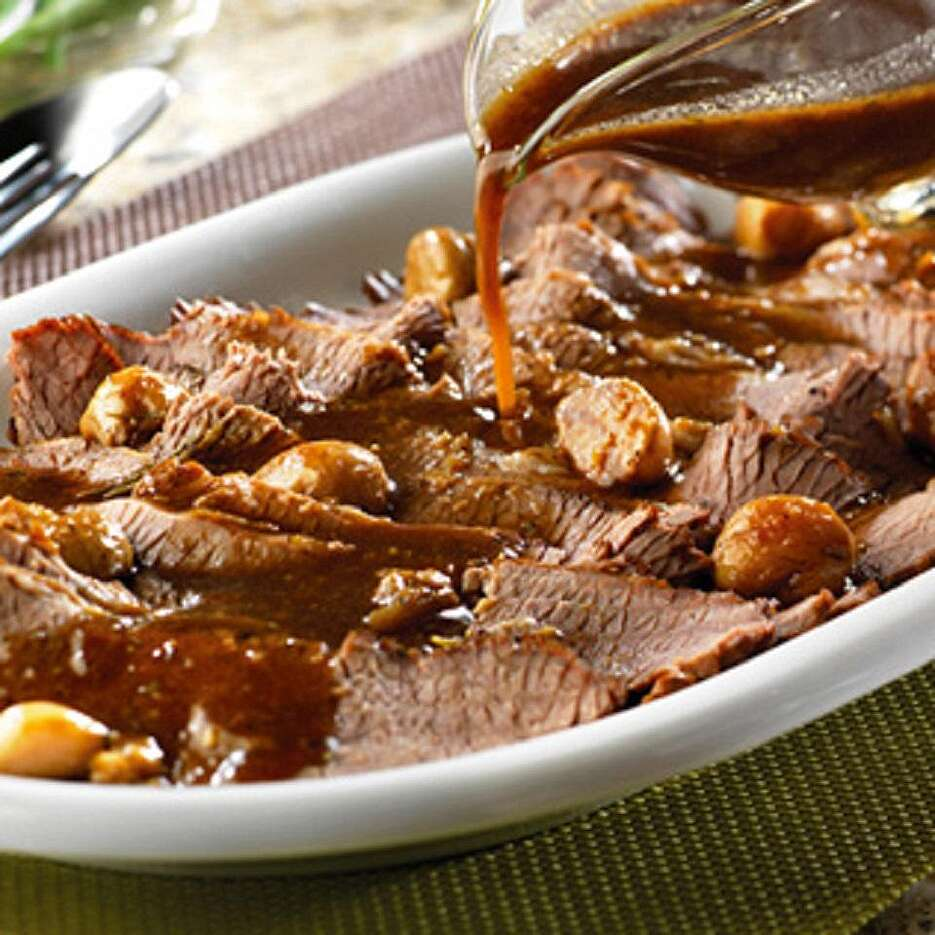

Braised Brisket

Description
Braised brisket is cooked low and slow in wine for juicy, flavorful bites. This recipe
is perfect for a weeknight meal or a holiday feast. Although many people prefer to smoke
or grill a brisket, this is one of my favorite ways to prepare this cut of meat. Once
the brisket is seared it's laid on a bed of sauteed onions, carrots and celery. Garlic
and thyme are added to a reduction and everything is braised to tender perfection.
Ingredients
- 1 lemon
- 3 tablespoons olive oil
- 5 pounds beef brisket
- 20 cloves of garlic
- 1/2 cup red wine
- 3 cups beef broth
- 3 sprigs fresh thyme
- 2 sprigs rosemary
- 1 tablespoon of minced garlic
- 1 large onion
- 1 celery stalk
- 3 gold potatoes
Steps
- Preheat oven to 300 degrees
- heat 3 tablespoons of olive oil in a pan on high heat
- Add the brisket to the pan, searing both sized until golden brown.
remove brisket from the pan and set to the side
- add the garlic, onions, carrots and celery and cook till for several minutes
stirring occassionally.
- add the red wine and the beef broth to the pan while scraping up the brown
brown bits from the bottom.
- return the brisket to the pan and cover
- bake for 2 hours. After the 2 hours add the potatoes, cover and bake for the
remainding hour or until brisket is tender